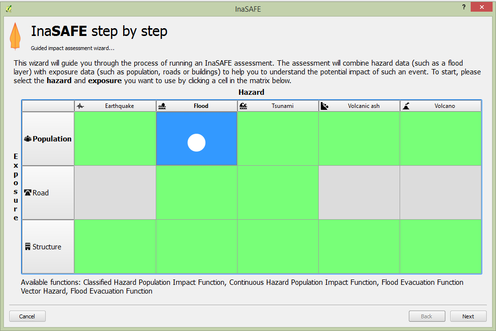
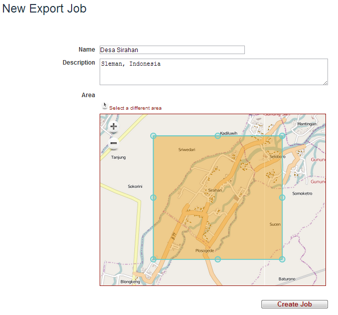
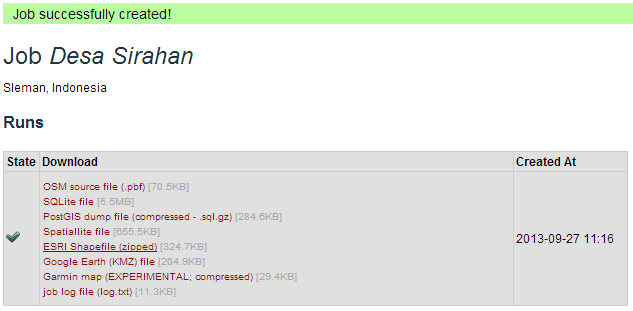
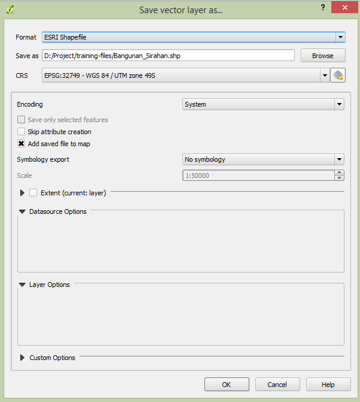
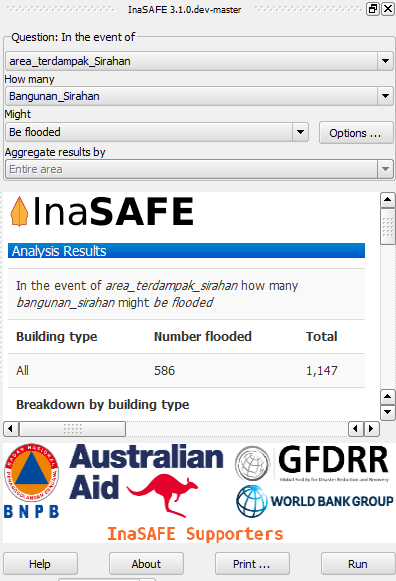
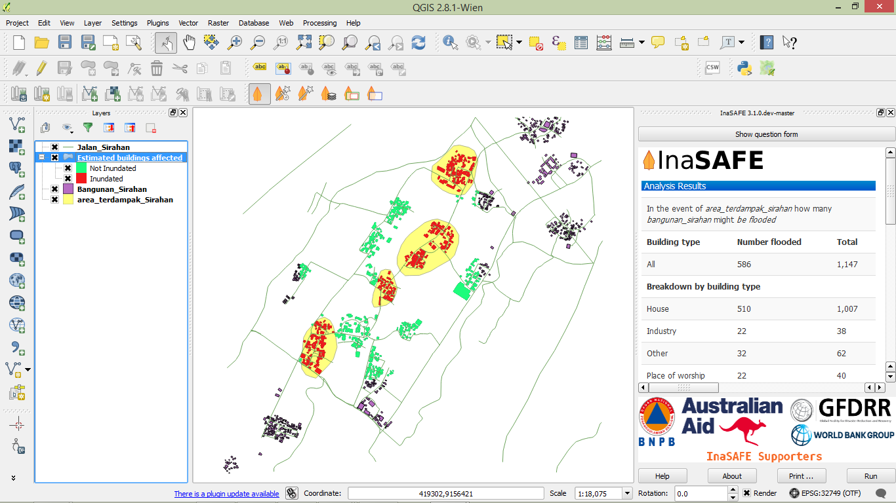

Module 2: Preparing Data and Keywords for InaSAFE¶
Learning Objectives
Understand InaSAFE inputs
Get OSM data from the HOT export server
Load data into InaSAFE
Add keywords
Prepare the hazard layer
Run InaSAFE
Now that you know your way around QGIS and InaSAFE, let’s go further. In this module, we will see how to prepare our own data so that it can be processed in InaSAFE. Much of what we cover in this module you’ve already done, though we will go over some of it in greater detail. We’ll be using the project created in this module throughout the rest of the unit, so be sure to save it along the way!
1. InaSAFE inputs¶
Let’s review the types of data used by InaSAFE.
Hazards are conditions, phenomenon, or human activity that potentially cause victims and destruction to society and environment. Frequently observed hazards are earthquakes, tsunamis, floods, landslides and tornadoes.
When we are working in InaSAFE, hazard data refers to a vector or raster dataset that represents the level and magnitude of an event that can potentially cause damages. To be used for impact calculation in InaSAFE, level and magnitude of an event scenario must be mapped over the area of interest. This means that hazard data must be geographic - it must have location. We have already looked at hazard data for the 2007 Jakarta flood and the Lembang earthquake. These hazard layers were produced from scientific modelling conducted by scientific organisations and government agencies. These are typical sources for such hazard data, although in cases of flood hazards such data may also be gathered from affected communities.
Generally, hazard data has the following characteristics:
are at a particular location
have a measured intensity (ie. the depth of a flood or the MMI of an earthquake)
have a measured duration of impact (ie. hours or days after a flood)
have a certain time frame (ie. in the case of a sea rise flood)
In this module, our hazard input will be a flood in the village of Sirahan, in
Magelang regency in Central Java.
The data for this flood comes from participatory mapping activities done by
community members as part of the REKOMPAK project.
The data is in the training folder qgis/Sirahan/.
Exposure data refers to natural and man-made objects that may be affected if a disaster scenario really happens. In this module we will use building exposure data created in OpenStreetMap.
The InaSAFE impact functions produce an output layer representing potential damages or losses on the affected exposure layer. This output layer will be created once the impact calculation process is finished processing. InaSAFE has many impact functions available, which are listed through the ‘Impact Functions Doc’ menu (see below). The impact calculation will only be possible when users provide the hazard and exposure layer datasets and, when necessary, users define the required parameters through the keyword Wizard correctly.
Aggregation is used to reclassify the result of the impact calculation according to a specific administrative boundary level.
Keywords define which category a dataset belongs to, whether hazard or exposure. They are also used to define specific parameters to be considered, as we shall see. After you calculate the impact of a scenario with InaSAFE, what next? Well, the impact calculation can be used to prepare a contingency plan. That’s why relevant questions and remarks are displayed in the Result section, which may then be considered by disaster risk managers or planning managers.
2. Getting OSM data from HOT Exports¶
In previous scenarios, we used example data provided in the training directory, but to set up our scenario in the village of Sirahan, let’s access the OSM data ourselves to use as our exposure layer. We will use the OSM buildings to calculate how many buildings (and which) will be inundated when a flood occurs similar to our hazard model.
We’ve worked with OSM data a lot already. Now we will utilise a website where we can quickly and easily access the data from OSM.
Open your web browser and navigate to http://export.hotosm.org.
If you are a new user, create an account. If you have an account already, sign in.
The HOT Export website allows you to choose an area and create a data extract from that area. Then you can download the data in a variety of formats that are easily read by QGIS.
In the upper right corner, click New Job
Give the job a name, such as Desa Sirahan.
Zoom in on the map until you can see the village Sirahan, which is just north-west of Yogyakarta.
Click Select Area and then draw a box around Sirahan village.
The page should look something like this:
Click the Create Job button.
You will be asked to define a presets file. This is like the presets that you added to JOSM in the previous unit, except here, they define the attributes that the HOT export server will provide.
Choose preset file-INASAFE.
Click the Save button and take a few breaths!
It may take a few minutes for the data extraction job to process. When it is finished, the page will change and you will see a list of files you can download like this:
Click on ESRI Shapefile to download shapefiles, and once you have it, extract (unzip) the archive on your computer. It should create a directory named
extract.shp.
3. Loading data¶
We will use this OSM data as our exposure data. Open a new QGIS project and add all of the shapefiles that you downloaded as vector layers. You should have four layers:
For reasons that will become clear later, we need to change the map projection from the default OSM projection (WGS 84) to WGS 84 / UTM 49S. In other words, we need a CRS that uses metres, not degrees.
Right-click on the planet_osm_polygon layer and click Save as.
Click Browse and navigate to a place where you would like to put the new shapefile. Name the file Bangunan_Sirahan and click Save.
Next to CRS, click CRS icon.
In the filter box, type UTM zone 49S, as shown below:
Select the CRS WGS 84 / UTM zone 49S and click OK.
The Save vector layer as… dialog will look like this:
This is the layer that we will be using as our exposure data. You can remove the other OSM layers, or if you would like them to remain visible, go to and enable ‘on the fly’ transformation.
4. Adding keywords¶
Since we’ll be using this buildings layer as our exposure, we need to set the keywords so that InaSAFE knows what the layer contains. If you remember from Unit 2, this is done with the keywords Wizard.
Select the Bangunan_Sirahan layer and click the Wizard button on the InaSAFE toolbar.
You will see a dialog box and select exposure and after that you can follow the steps in the dialog box.
Select unit information that you want to calculate in InaSAFE. For building data you can choose building type to group the result of the impact function. You need to make sure there is the building type attribute in your exposure data. Or if you do not have the building type attribute in your exposure data, you can select building generic.
You also need to select which attribute has building type values. In this data please select amenity and in the last step you can give a title for your exposure data and click Finish
5. Preparing a hazard layer¶
The hazard data that we have used previously has come from government agencies and scientific institutions. This time, we will use data that came from community mapping activities, that is, from community members on the ground. The data was created as a paper map and later converted into digital format. The data has already been prepared, so we simply need to add it as our hazard layer.
Click Add Vector Layer… and add
area_terdampak_Sirahan.shpin theqgis/Sirahan/directory.
You can see that this layer is already known to InaSAFE, so presumably it has keywords already set.
Before we define the keywords of this data and because of the way that InaSAFE calculates this function, we need to make sure that this exposure layer has a column in the attribute table that InaSAFE expects, named “AFFECTED”.
Open the attribute table for the area_terdampak_Sirahan layer.
We need to add some data to this layer so that QGIS can run the flood function correctly. When QGIS runs the flood function, it checks every feature in the hazard layer to make sure that it is in fact a flood prone area. Hence, each feature must have an attribute named “AFFECTED”. First, let’s add the new column to our layer.
In the attribute table, click the Toggle Editing button.
Click the New Column button.
Type affected as the name and select Text(string) for Type. Give 10 for the width.
Click OK.
Now select each value in the column “affected” and type “1”, instead of NULL
Click Save Edits and then Toggle Editing to stop the editing process.
Select the layer and open the Keyword Wizard and select Hazard and follow the steps in the dialog box
In this hazard data we select flood as the hazard type because we assume that this is a flood hazard.
Select wet/dry as the subcategory for flood, and after that select the wet/dry attribute that represents the flood extent as wet/dry.
As the last step, you can give a title for your hazard data and click Finish
6. Running InaSAFE¶
Everything is prepared now - our layers are loaded, the keywords are set, and we’ve ensured that the layers have the data that InaSAFE expects. Make sure the question form in InaSAFE looks like this
and then click Run!
The results should looks something like this:
Save your project! We’ll be using it in the upcoming modules…
We’ve run a few scenarios, but what is next? In the next modules we will use our QGIS skills to find the best evacuation routes for people to use in the case of the flood disaster, as well as examining appropriate places for IDP camps.